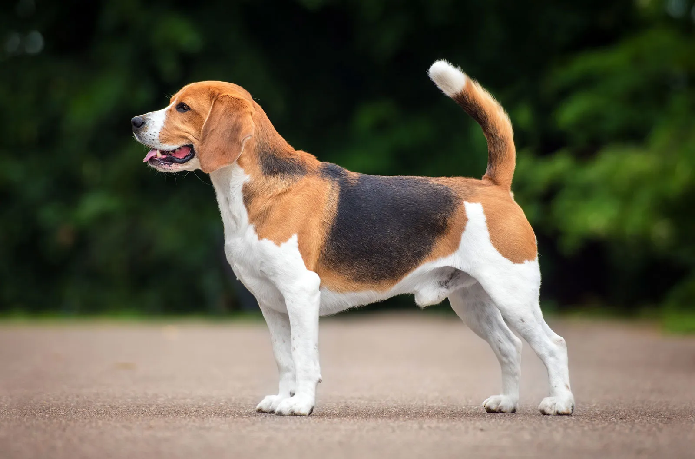

The Beagle Blog
The Beagleis a breed of small scent hound, similar in appearance to the much larger foxhound. The beagle was developed primarily for hunting hare, known as beagling. Possessing a great sense of smell and superior tracking instincts, the beagle is the primary breed used as a detection dog for prohibited agricultural imports and foodstuffs in quarantine around the world. The beagle is intelligent and is a popular pet due to its size, good temper, and a lack of inherited health problems.
Read MoreImages
 More ImagesTrivia
- Height - 13-16 in (33-41 cm)
- Weight - 22-25 lb (10.0-11.3 kg)
- Coat -Short haired, hard coat of medium length
- Colour -Tricolor or white in combination with black & tan/brown or brown/tan
- Life span - 12-15 years